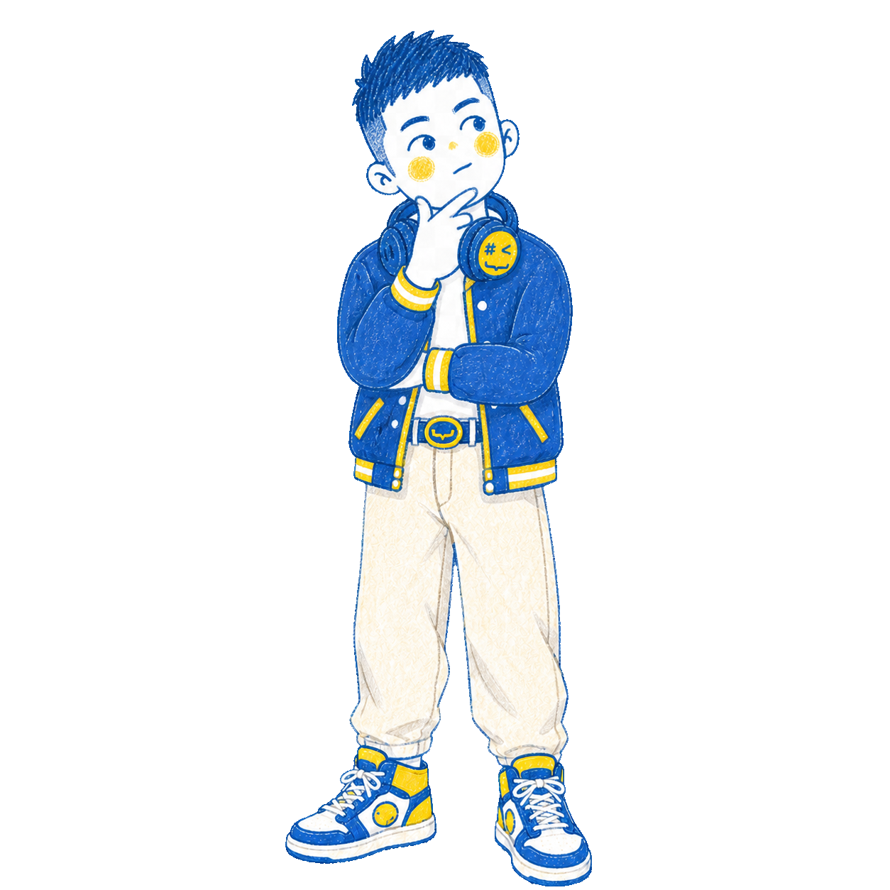
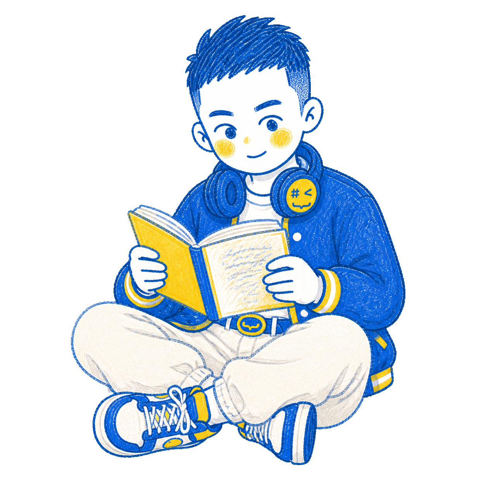
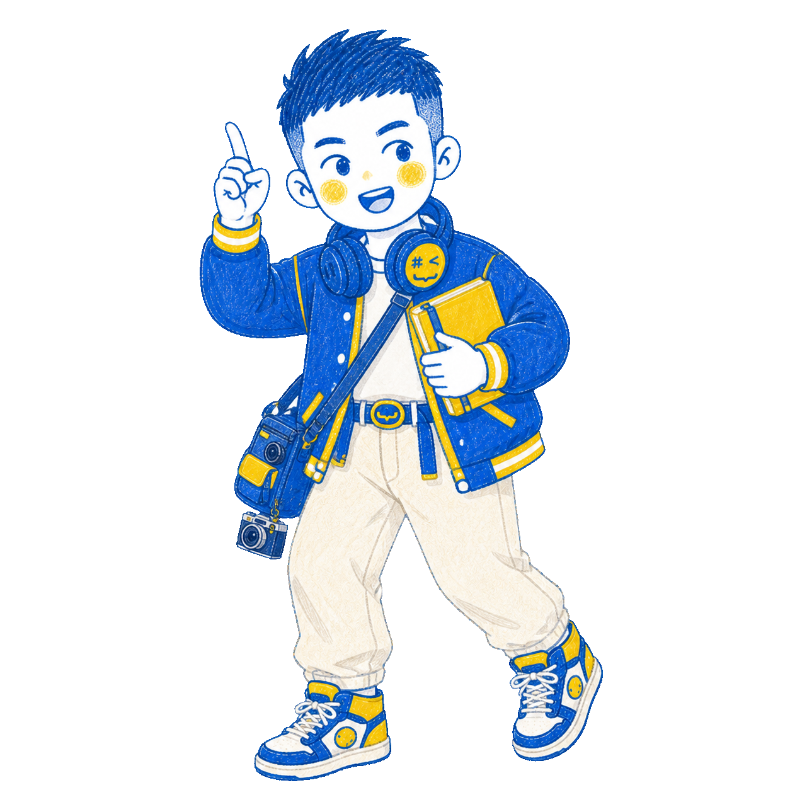
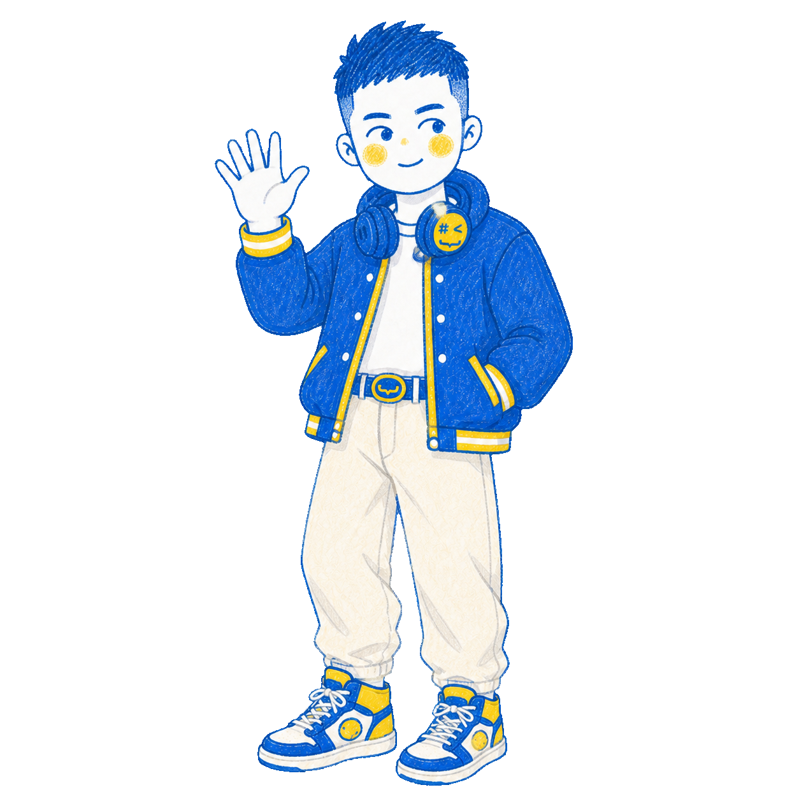
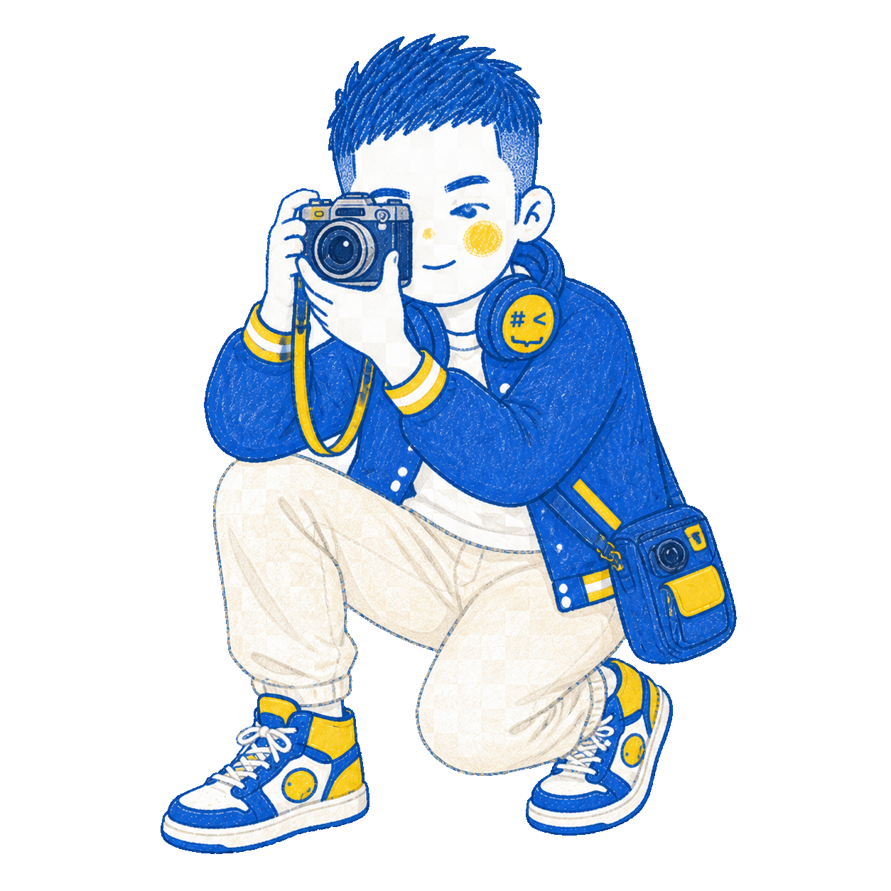
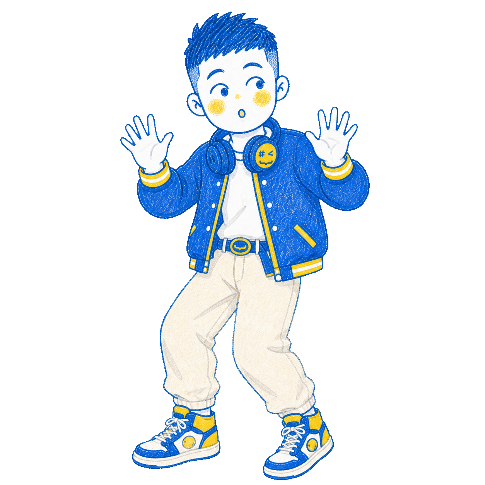
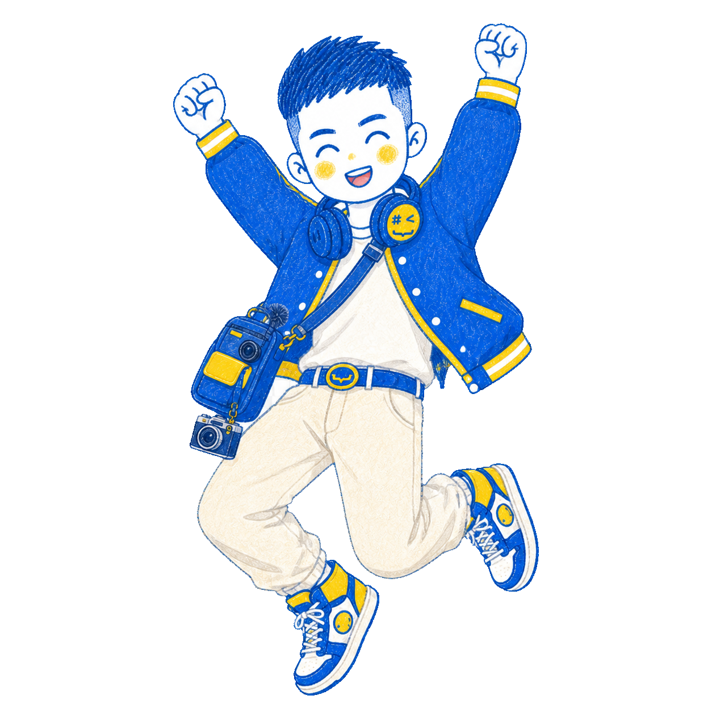
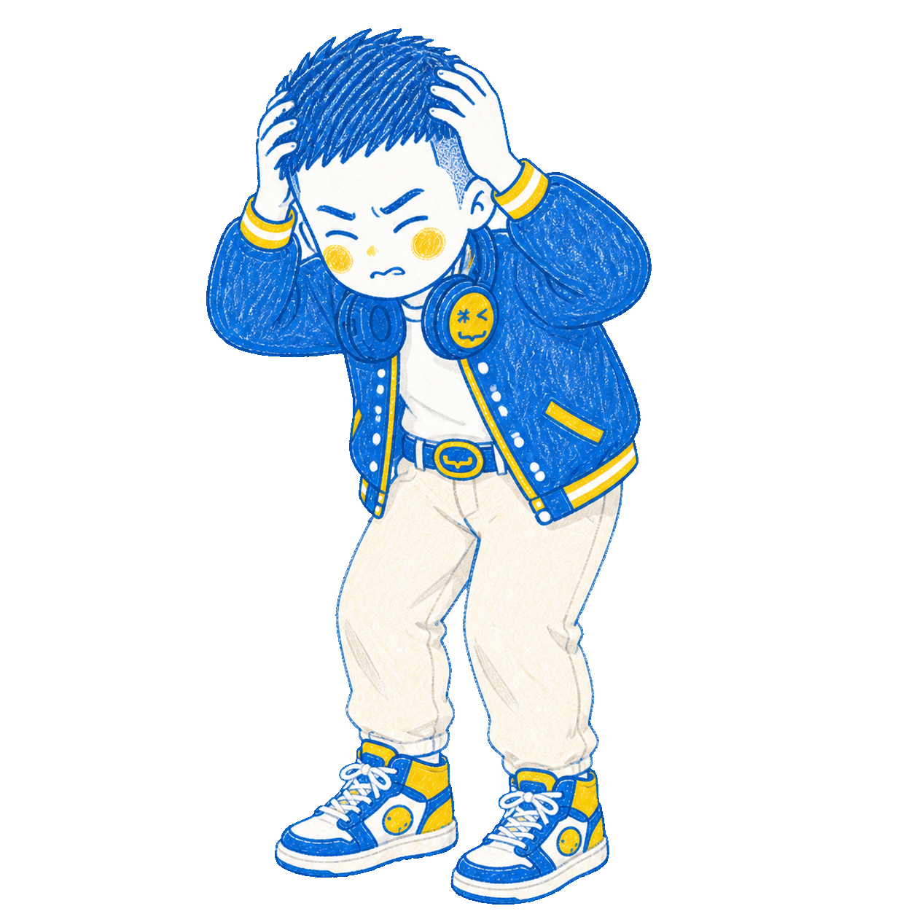
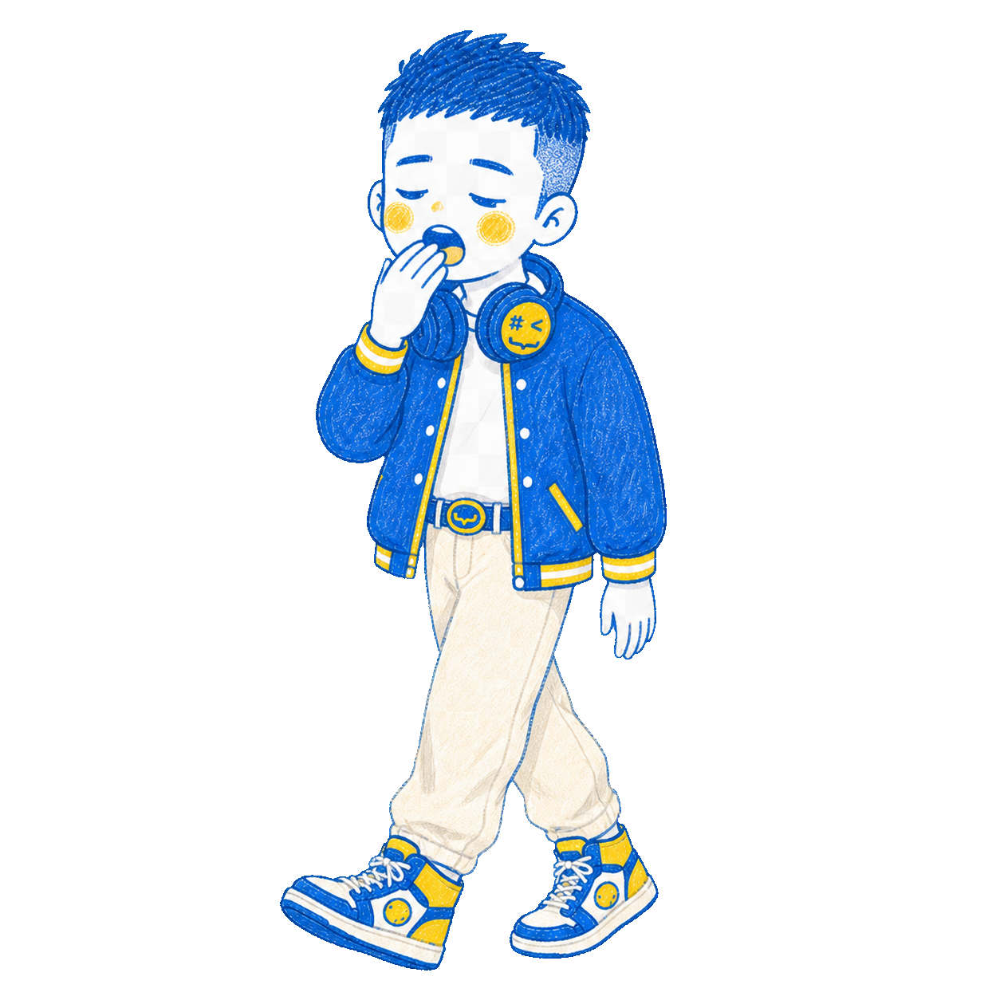
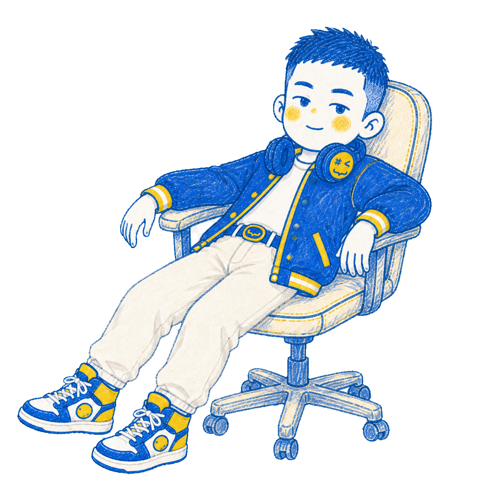

BOOK · 2026编程启蒙
编程启蒙
思维与代码
重塑思维逻辑，驾驭代码力量，探索编程世界的无限可能。
PART ONE · THINKING
思维
不用写代码，先学会如何认识问题、拆解问题与解决问题。

PART TWO · PYTHON
代码
从变量与数据类型出发，循序渐进建立属于自己的编程逻辑。
“
A DIFFERENT START不用写代码，
直接学思维。
真正重要的起点，不是背下一段语法，而是学会把复杂问题变得清楚。

“
THE ESSENCE OF PROGRAMMING编程的本质，
不是代码，
而是思想。
从最早的“程序”到分析机与图灵，理解机器背后持续生长的人类思维。

用算法，解决生活难题。
撒米算 π从意想不到的实验理解随机与估算。
4 分钟炒蛋从厨房任务理解并行计算。
蚂蚁找路从自然行为理解路线优化。

PIXELS · COLOR · VISION从像素到美颜，
从像素到美颜，
计算机如何看图像？
照片不是计算机眼中的“照片”，而是一张由数字构成的数据网格。
第 3 章 · 编程思维，教你思考
归纳法 × 演绎法
让计算机理解世界
一边从例子中总结规律，一边用标准进行判断；两种思维协同，才有更聪明的系统。
观察样本
总结规律
设定标准
验证判断
理解
01001000 01100101 01101100 01101100 01101111 00100000 01010111 01101111 01110010 01101100 01100100 01001000 01100101 01101100 01101100 01101111
THE BINARY MAGIC两个数字，
搞定整个世界。
0 + 1 → ∞
从开关到计算，理解计算机最底层的简洁原则。

会“听话”的机器，
是怎么来的？
输入把人类意图转换为机器可以处理的信息。
规则用逻辑与步骤约束机器如何行动。
反馈在结果中继续修正，逐步接近目标。
Python 小咖养成计划
01在线环境先跑起来
02变量给数据起名字
03数据类型理解信息结构
04判断与循环控制程序流程
05函数组织可复用逻辑

变量，就是给数据起名字。
book = "编程启蒙：思维与代码"
author = "黄家宝"
print(book, author)
author = "黄家宝"
print(book, author)
每一种数据，
都有适合它的容器。
字符串文字与符号的序列
列表有顺序的数据集合
字典键与值的对应关系
集合不重复的元素集合
if 想清楚:
行动
条件成立，就执行这一条路径。
else:
调整
条件不成立，就换一条路径继续。

让重复，
交给计算机。
while 持续检查条件，for 逐个处理序列。循环不是原地打转，而是带着目标不断推进。

把复杂过程，
装进一个名字。
def solve(problem):
steps = think(problem)
return practice(steps)
steps = think(problem)
return practice(steps)
为每一个想理解编程的人而写。
01零基础读者不设门槛，从思维与生活经验开始。
02有基础的学习者重新理解语法背后的逻辑，做到举一反三。
03师生与辅导机构作为体系化、结构化的编程入门参考。

一本书之外，继续实践。
01在线编程平台codemark.bornforthis.cn/editor
02代码分享平台codemark.bornforthis.cn/sharecode
03可视化学习pythontutor.bornforthis.cn
04最新消息与资源bornforthis.cn/Books/
别等别人拯救你。
拿起这本书，学起来。
蜕变从此开始。